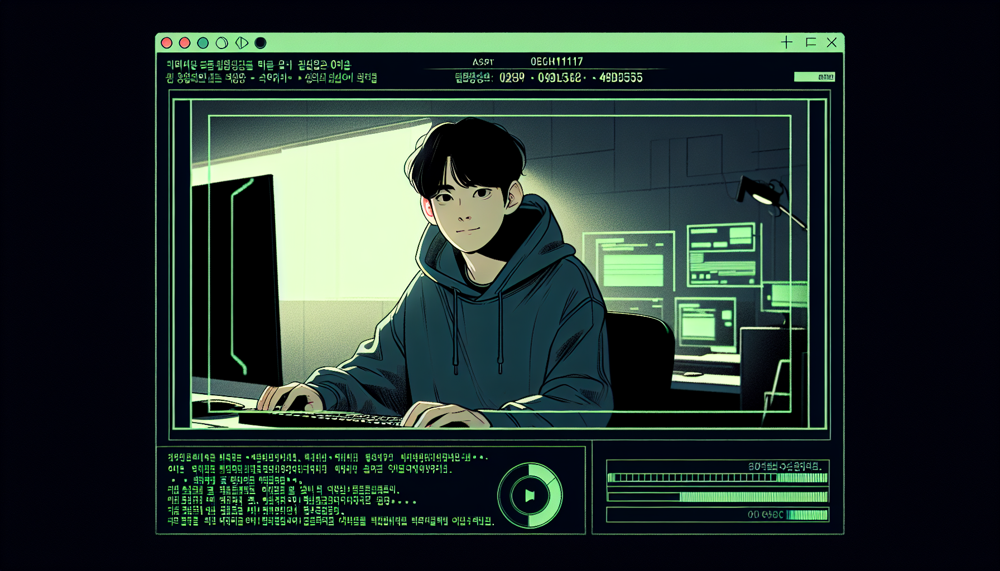
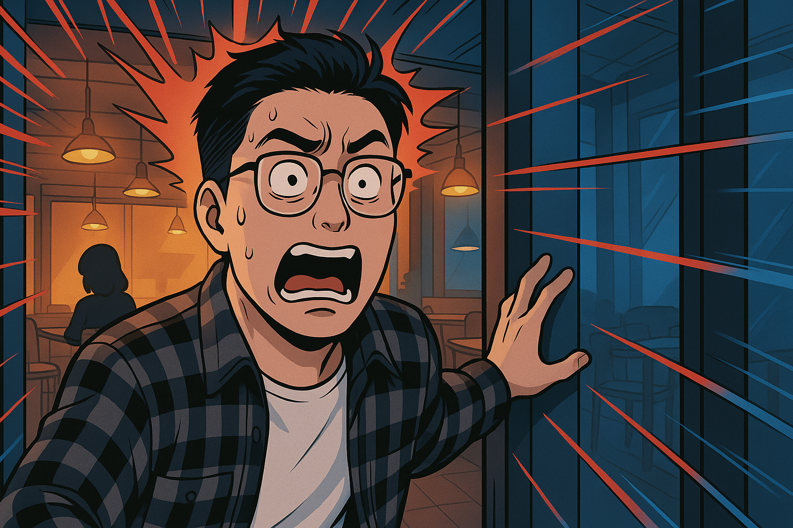
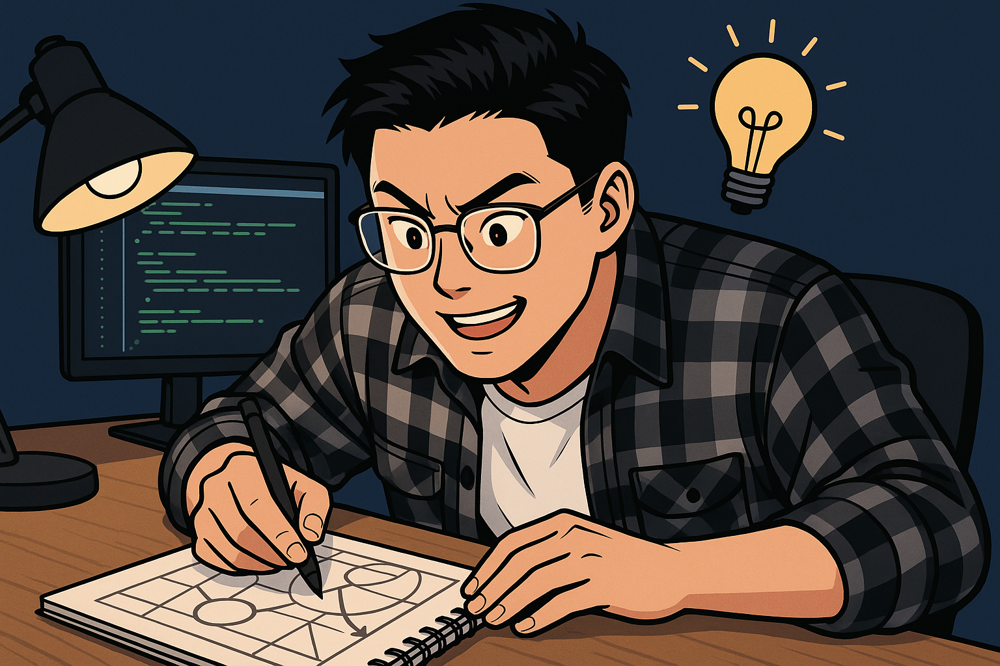
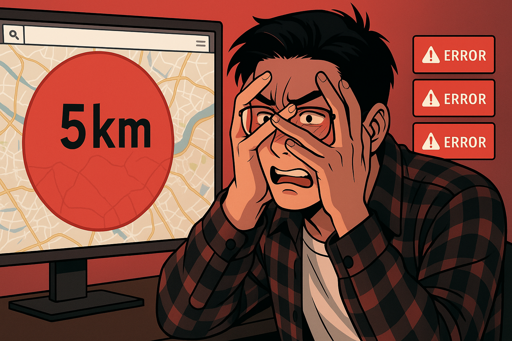
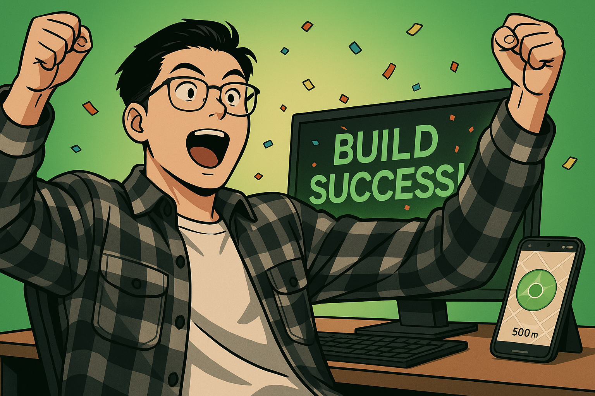
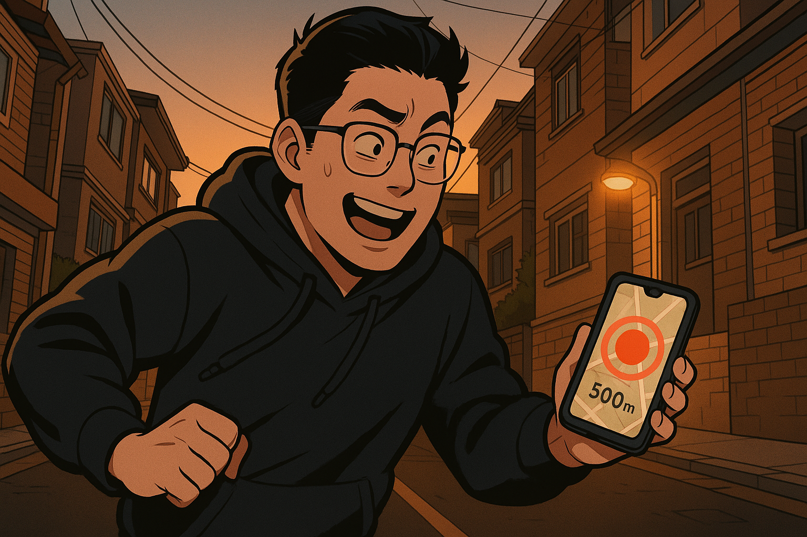
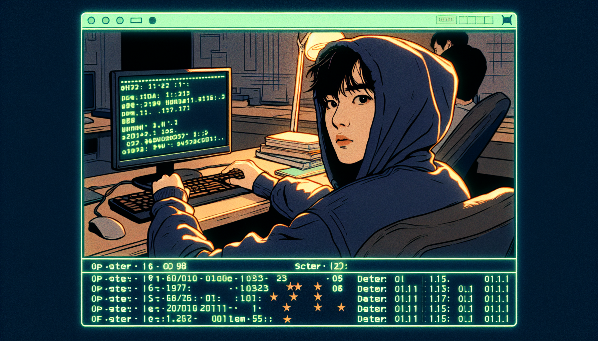

딸깍연구소
EP.01 PRODUCTION PLAN
"헤어진 여자친구랑 절대 마주치지 않게 해주는 앱 만들어봤습니다"
Section 01
컨셉 리캡 Concept Recap
채널 기획서(1차 기획안)에서 확정된 핵심 요소와 EP.01의 서사 구조를 한눈에 정리합니다.
채널 정체성
| 채널명 | 딸깍연구소 (Click Lab) |
| 분야 | IT/테크 x 예능/코미디 |
| 문화원형 | Jester x Creator |
| 로그라인 | "코딩을 모르는 대학생이 AI에게 딸깍 한 번으로 세상에서 가장 쓸데없는 앱을 만들어본다" |
| 시그니처 | "대딸깍의 시대, 제가 해결해보겠습니다" |
EP.01 키워드
앱 이름: Don't Meet Your Ex (DMYE)
핵심 기능: GPS 기반 전 여친 접근 경고 (500m 주의 / 100m 대피)
Section 02
촬영계획 Shooting Plan
D-3부터 D-day까지의 제작 일정, 촬영 장소, 장비 리스트, 출연진 정보입니다.
// PRODUCTION SCHEDULE
| Day | 내용 | 장소 | 소요 |
|---|---|---|---|
| D-3 | 앱 사전 개발 + 바이브코딩 화면 녹화 (OBS) Claude Code로 DMYE 앱 실제 제작. 에러/시행착오 과정 전부 녹화 |
데스크 | 2~3h |
| D-2 | 재연 촬영 (카페 마주침) + 실외 시연 촬영 (GPS 테스트) 카페 재연: 사람 적은 시간대. 실외: GPS 수신 좋은 야외 |
카페야외 | 2h |
| D-1 | 데스크 토크 촬영 (인트로/아웃트로/평가) 얼굴캠 + 모니터 보이는 각도. 스케치 파트 포함 |
데스크 | 1h |
| D-day AM | 편집 (러프컷 -> 파인컷) Premiere Pro / CapCut. 타임라인 조립 -> 컷 편집 -> 효과 삽입 |
데스크 | 4~5h |
| D-day PM | 자막 + 효과음 + 썸네일 + 업로드 JetBrains Mono 자막, 효과음 레이어, GPT Image 썸네일 |
데스크 | 2h |
// EQUIPMENT
// CAST & CREW
Section 03
스토리보드 Storyboard
Story Circle 8단계별 촬영 프레임. 카드를 클릭하면 오디오 큐, 전환 방식, 편집 노트를 확인할 수 있습니다.

Screen capture (터미널 풀스크린) + PIP (얼굴캠, 우하단 1/6). 타이핑 애니메이션 한 글자씩.
Audio
기계식 키보드 타건음 ASMR (Cherry MX Blue) + lo-fi 비트 페이드인 (vol 30%)
Transition
타이핑 완료 -> 글리치 트랜지션 -> 타이틀 시퀀스
Edit Note
컷 길이 5~8초. 느긋한 리듬. 감정: 평온 -> 호기심. OBS 세팅 1080p/60fps.
Motion graphics. 향후 모든 에피소드 공통 사용. 3초 징글.
Audio
시그니처 징글 3초: 코드 컴파일 효과음 + 전자음 사운드 로고
Transition
글리치 -> 로고 fade in -> 하드컷으로 다음 씬
Edit Note
글리치 프리셋 (Premiere Pro or CapCut). 채널 로고 에셋 사전 준비 필요.

Wide shot (카페 전체, JAY 입장) -> Hitchcock Zoom (전 여친 발견 순간, 슬로모션) -> Close-up (JAY 놀란 표정) -> 얼굴캠 풀샷 (토크 파트, 밈/짤 PIP 삽입)
Audio
공포 영화 "쨍-" 현악 스팅어 + 심장 박동 소리 / 토크: 서스펜스 lo-fi 변형
Transition
프리즈 프레임 -> 빨간 글씨 "어... 안녕..." 오버레이 -> 컷 전환 (토크)
Edit Note
컷 길이 2~4초. 빠른 전환. 장소: 사람 적은 시간대 카페. 친구 섭외 필수. 리허설 1회.

Medium shot (데스크, 노트에 스케치하며 설명) -> Insert cut (스케치 클로즈업: 기능 3개) -> Screen capture (터미널 + PIP 얼굴캠). AI가 코드 생성하는 순간 = 경이로움.
Audio
경쾌한 lo-fi (볼륨 업) + 아이디어 전구 "팅!" / 코딩: 타이핑 가속음 "따다닥-"
Transition
스케치 -> 디졸브 -> 터미널 화면. AI 프롬프트를 자막으로 하이라이트.
Edit Note
컷 4~6초. 중간 템포. 스케치용 노트앱/종이 준비. 프롬프트 대사 사전 스크립트.

Screen capture (터미널 에러 메시지) + PIP reaction (당황/웃음) -> Insert cut (에러 메시지 클로즈업) -> 지도 화면 캡처 (서울 전체 덮는 거대 빨간 원) -> 타임랩스 (수정 과정 3~4배속)
Audio
"삐----" 에러 알림 + 트롬본 "빠빠바~" / 경고 폭주 소리 + 핵폭발 밈 효과음 / 수정: 긴장 비트
Transition
에러 -> 리액션 컷 (점프컷 다수) -> 지도 화면 풀스크린 -> "수정 중..." 자막 + 경과 시간 카운터
Edit Note
컷 1~3초 (가장 빠름). 여기서 시청자가 가장 많이 웃어야 함. 리액션 과하지 않게 (무심한 듯 진지). 에러 의도적으로 남겨두기.

Screen capture (터미널 BUILD SUCCESS) -> Close-up (JAY 진심으로 놀라는 표정) -> 앱 화면 풀스크린 (지도 + 500m 반경) -> 슬로모션 리플레이 (빌드 성공 터미널)
Audio
비트 드롭 + 성공 팡파레 (2~3초) + "딩동댕-!" + 환호
Transition
"BUILD SUCCESS" 초록색 터미널 스타일 자막 화면 중앙 -> 앱 화면으로 하드컷
Edit Note
컷 3~5초. 슬로모션 포함. 감정 곡선 최고점. 리액션 자연스럽게 (리허설하되 과하지 않게).

Two-shot (야외, JAY 걷기) -> POV (앱 화면: 지도 + 경고) -> Handheld (도망 장면, 흔들리는 카메라) -> Static wide (골목 모퉁이, 마주침 반전)
Audio
500m: 부드러운 "띵-" / 100m: 사이렌 + 대피 경보 / 마주침: 코믹 "짠-" 효과음
Transition
앱 화면 <-> 실외 교차 편집. 경고 단계별 긴장 고조. 마주침 = 프리즈 + 자막 오버레이
Edit Note
컷 2~4초. 실외 촬영: GPS 수신 좋은 곳. 스마트폰 2대 필요. 친구 동선 사전 기획 (500m -> 100m 경로). 핸드헬드/짐벌.

Medium shot (데스크 셋업, 처음과 같은 프레이밍 = 원형 구조 완성). 얼굴캠 + 점수 그래픽 오버레이.
Audio
클로징 BGM (메인 테마 변형, 따뜻한 톤). 드럼롤 -> 점수 공개 효과음.
Transition
점수판 ASCII 아트 애니메이션 -> 다음 예고 힌트 텍스트 페이드인
Edit Note
컷 5~8초. 다시 느긋한 리듬. 다음 예고: "교수님이 지금 연구실에 계신지 알려주는 앱"
End screen template. QR코드 (앱 체험 링크) + 유튜브 엔드스크린 카드 (다음 영상 + 구독).
Audio
아웃트로 징글 + 시그니처 클로징 멘트
Transition
디졸브 -> 엔드스크린 (15초 유지)
Edit Note
엔드스크린 카드 배치 기획. QR 코드 생성 필요. 시그니처: "다음 하찮은 문제에서 만나요"
Section 04
편집 디렉션 Edit Direction
자막 스타일, 효과음/BGM 설계, 썸네일 기획입니다.
// SUBTITLE STYLE
| 코드 폰트 | JetBrains Mono |
| 한글 폰트 | Noto Sans KR |
| 핵심 키워드 | #39d353 (초록) |
| 감정 표현 | #f0c000 (노랑) |
| 에러/실패 | #ff5f57 (빨강) |
// AUDIO LAYER MAP
| Layer | 구간 | 소스 | Vol |
|---|---|---|---|
| BGM | 인트로~기획 | lo-fi 비트 인트로 | 30% |
| BGM | 바이브코딩 | lo-fi 코딩 비트 (메인) | 40% |
| BGM | 시행착오 | 긴장감 서스펜스 | 50% |
| BGM | 클로징 | 메인 테마 변형 (따뜻) | 40% |
| SFX | 인트로 | 키보드 타건음 | 60% |
| SFX | 에러 | "삐-" + 트롬본 | 80% |
| SFX | 성공 | 팡파레 + "딩동댕" | 80% |
| SFX | 시연 경고 | 알림음 (단계별) | 90% |
| NAR | 전 구간 | JAY 내레이션/토크 | 100% |
// THUMBNAIL
절대 안 마주치는 앱
| 메인 이미지 | JAY 공포 표정 + 뒤돌아보는 모습 |
| 배경 | 지도 앱 (빨간 위험 반경) |
| 컬러 | 빨강 경고 + 초록 코드 |
| 제작 | GPT Image + Canva |
Section 05 OPTIONAL
쇼츠 파생 + 다음 에피소드 Shorts & Next Episode
시간 여유 시 발표에 포함. EP.01에서 추출하는 쇼츠 3개와 EP.02 예고입니다.
Appendix